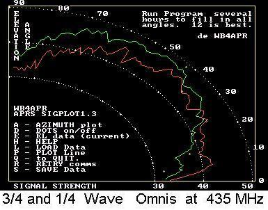

GO-32 APRS Operations
GO-32 APRS Operations

US Naval Academy Satellite Lab
Bob Bruninga, WB4APR
Roni Waller, 4Z7DFC
GO-32 APRS Operations
US Naval Academy Satellite Lab
Bob Bruninga, WB4APR
Roni Waller, 4Z7DFC
[ GO32 has been declared non-operational by Chris, M0DQO ]
[ because it cannot retain any command software for very long]
[ This page is now (Jun 2010) being retained for historical purposes ]
[ It does show how a PACSAT BBS satellite can serve APRS! ]
Use GO-32 for Field Day! Use your D7 or D700 radio at 9600 baud and APRS. Set RX on 435.225 +/- 10 KHz for Doppler. Set PATH via 4XTECH. For APRS software -or- any messages, set TX for 145.85 MHz for all messages. . The 145.93 channel uplink ONLY works for Mic-E position packets (and not any messaging), so be sure to be on 145.85 for Field Day message contacts (not .93). Your contact is complete if someone sees you and sends you a message. Send messsages to ALL, so that everyone can see them and respond. Include QSL callsigns in the message.
Note that the D7 can be set to DCD-IGNORE and will TX as needed. The D700 will always wait until the downlink drops before it will TX (and so will everyone else's). Better to force a TX, by momentarily QSYing the tuning knob. For all other APRS Field Day contacts (on 144.39, not satellite), see how to send a GLOBAL CQFD message
Satellite Simulated Emergency Test: . Beginning the second week in November, GO-32 is part of a Satellite Simulated Emergency Test to demonstrate first-responder emergency communications out of an affected area. See details. . This is in support of AMSAT initiatives toward a Homeland Security potential mission involving the Amateur Satellites. . This period is especially rewarding since it corresponds with the annual fall full-Sun-recovery of PCSAT making dual hop and joint operations possible, including joint operations with the ISS , and ANDE spacecraft.
Important Info: . . . . . 435.225 MHz Downlink (+/- 10 KHz Doppler). . See below for Uplinks.
The GO-32 Satellite TECHSAT-1B team has enabled APRS experimentation with 9600 baud APRS access for mobile, portable and other APRS experimentation on a not-to-interfere basis with the existing PACSAT BBS. . This makes APRS position and status reporting plus brief text messaging possible anywhere on the planet from mobiles.
The uplink is possible with 5 Watts on 2 meters to an OMNI antenna, but the downlink is 9 dB worse to an omni antenna on UHF and requires tuning +/- 10 KHz for Doppler. . The difference between uplink and downlink performance for a 50W mobile is nearly 20 dB! . At this early date, we have few permanent IGates to bring the downlink into the global APRS system, but we hope volunteers will surface with permanent satgates. . A special simplified stand-alone SATgate system is being written for the D7 and D700's. . So initally, do NOT expect to see yourself on FINDU.COM. . Enjoy ham radio, Make a contact instead!
Experimental testing shows that an APRS HT with a 19.5" whip can get a lucky shot into this satellite on a high overhead pass (but not when there is congestion on the uplink). . With a handheld beam, it should be no problem for an HT, and the beam is needed on reception anyway most of the time. . Fifty Watt mobiles have no problem on the uplink using a stock mobile whip.

Tracking GO-32 is easy and does not need a computer. The ground track repeats every 9 days as shown above so you only need a simple table for your area and you can predict passes any day. . In fact, manual tracking works for most LEO satellites. . See my Manual Tracking WEB page for more details. . Since GO-32 repeats its ground track schedule every 9 days the table below can tell you the pass time for any pass for the next 6 months:

Please see other time zones tables in the USA.
In fact, you can figure this out in the wilderness too. Just set your mobile, or HT (with long whip) out in the clear between about 8 to 11 AM local sun time. Go back and check the MESSAGES that the radio received during that time, and presumably the last time stamp heard by your rig will be about 5 minutes after one of the above times. . That will tell you what day cycle you are on!
RECEIVING THE DOWNLINK: . This is where the challenge is. We invite mobile operators with roof top mobile antennas, to set their mobile D7 or D700 radios to receive GO32 while parked in the clear between 8 to 11 AM and PM local time. Report any reception of GO-32. . Remember to check both your station and message list, since GO-32 sends 3 APRS bulletins in addition to its frequent STATUS updates. . We know the uplink always works from a mobile. . but we are just beginning to gather data on reception.

As shown above, My first test with my D700 and 19" magmount whip on the roof of my car captured about 150 packets over the center 6 minutes of a high elevation pass. . Of the three passes in the morning and evening, only the center one will be above 30 degrees. . But, one day out of every 4, there will be two 30 degree passes instead. . I was tuning for Doppler. . Without Doppler tuning my reception window would be about half that shown for the high elevation pass.. . If a D7 or D700 can receive at least the center of the two overhead passes per day, and if we have enough such ground stations acting as IGates, then we can have a great mobile satellite system! . . A message can get through to the mobile twice a day! . See an example of typical downlink packets.
The photo above shows what the front panel station list of the D700 looks like. . After a half-days monitoring between 8 to 12 AM and PM, hopefully you will see the GO-32 callsign in the station list, and you should see some bulletins in the message lists. . To verify new receptions of the fixed bulletins, be sure to delete them so you have a clean slate for the next RECEIVE performance test.
MOBILE and ATTENDED OPERATIONS ONLY: . The 145.85 uplink for fixed APRS stations and any APRS messages is shared with the voice uplink to the AO-27 and So-50 FM REPEATERs. . For this reason, operations should be attended, or well controlled. 9600 BAUD APRS OPERATION: . Operating on a 9600 baud FULL DUPLEX APRS satellite is MUCH different than ARISS, or any of the other 1200 baud APRS PCSATS, because the turn-around is often so fast, that you cannot see your own digipeated packets on the same radio (usually)... . This will be the case whenever the PACSAT BBS is in use and the TX carrier stays up. . But when the satellite returns to "PTT" mode and only keys up when it has traffic, then APRS packets are significantly delayed so that each user can see his own digipeated packet. . Please read and understand this entire web page before attempting to operate.
THE MIC-E FORMAT: The easiest way to get on GO-32 with 9600 baud APRS is to use a Kenwood D7, D700 or D710 radio. . These radios since 1998 have been satellite 9600 baud ready, just waiting on a satellite!.
Read these notes on how to operate GO-32 with a D7 or D700:
Save in a PM for use anytime you are outside of the terrestrial APRS network.
SATELLITE OPERATING NOTES:
The GO32 uplinks and downlinks are for the PACSAT store and forward system and users and 145.85 is shared with AO-27 and SO-50 voice uplinks. . APRS is on a secondary basis and should not be operated unattended except for maybe some half-day tests.. . If you see that the BBS PBLIST is full of other users, do not enable your APRS since the uplink will be busy. Right now, the PBLIST is not in APRS format so you cannot see it unless you are running normal packet mode. . But we will work on that...
On the D700 you can press PMON on the front panel and see these packets... but they FLY by...
ACCESS TIMES: GO-32 is sun synchronous and so it comes over everywhere three times between about 8 AM to Noon and again between 8 PM to midnight local sun time. . During these two windows at least one pass each will be an overhead pass which might also work for an HT. . The other passes will be lower to the East or West and will work fine for a 50W mobile.
WHAT YOU HEAR: 9600 baud sounds almost exactly like open squelch, though the tuned ear can soon distinguish the difference. . Before the pass, set your squelch normally to quiet the speaker. . When you hear the satellite, the squelch will open and you may see up to 3 bars on your S meter. Tune to the "best sounding" noise.
DOPPLER: Depending on how low to the horizon you can see, the satelite approaches 10 KHz high at 435.235 MHz... But it is maybe 3000 km away. . As it gets higher, and 6 dB closer, it will be on 435.230 MHz, passing through 435.225 published center frequency at the middle point, and then drop down through 435.220 and ending at 435.215.
But since it is 6 to 10 dB closer (and stronger) towards the center of the pass (800 km overhead), the mobile antenna is probably only going to hear the middle 435.230, .225, .220 portion easily. So I would start my receiption at 435.230...
UPLINK CHANNELS: GO-32 has two uplink channels that can work for APRS packets. . One will allow only the Mic-E format APRS packets (D7 and D700 tactical position reporting) and the other will only work for APRS or UI messaging. . This is in hardware, due to front-end filtering parameters, not due to any arbitrary policy...
The reason for these uplink distinctions is due to GO-32 hardware that will only digipeat a packet on 145.85 that has a TOCALL beginning with "A". (All APRS fixed station packets and all APRS messages including D7 and D700's) . The 145.93 channel will only accept packets that begin with a digit between 1,2,3,4,5,6,7. . But fortunately the D7 and D700's do this naturally as long as the position comment is set to "committed, SPecial or PRIORITY"...
DATA CARRIER DETECT: The D700 and non(g) model D7's will NOT TX if they are hearing the downlink at the same time due to CARRIER DETECT. . The D7(g) model has a menu selection for DCD IGNORE that *will* let it TX anyway. . So use separate rigs for TX and for RX if you want to see yourself.
Otherwise stick to the recommended TX rates and know that you are getting in if you stick to the protocol. . Sticking to the recommended rates also keeps channel loading low, so that everyone gets in with less congestion.
PERMANENT SATGATES: Here is a great place to use your D7 HT when you are not using it otherwise. . Simply connect it to a 19" whip over a ground plane and to your APRS IGate system. . The antenna does not even need to be high, since it cannot hear, nor will it be on frequency for low packets near the horizon 3000 km away. . Set it to 9600 baud RX and tune to 435.230 (which is 5 KHz high). . This Doppler setting will match the stronger signals.
This 19.5" whip (3/4 wave on 435) does not need to see below 25 degrees, since its max gain (almost 7 dB) is between 30 to 70 degrees anwyay. . This also protects your HT from lightning, since it can be low, below all of your other antnenas. . Yes, your station will only see about 30% of all possible packets and only on the best two passes per day, but combined with dozens of other such unattended SATgates, all packets should be heard somewhere by someone and injected into the APRS Internet system.

VOLUNTEER GROUND STATIONS: Since the APRS mission of GO-32 has no onboard storage, we are dependent on volunteer ham radio ground stations (see typical photo - AA6RR) and (EA8BQD in the Canaries) for downlink feeds to the APRS Internet system for live distribution.
SETTING UP A SATGATE: You can use any APRS program to feed satellite data to the APRS-Internet system (APRS-IS) in the normal manner like any IGate. But if you dont want to mess with all the APRS system, you can build a simple SatGate using only the ALOGGER program. See building an ALOGGER Satgate. See the status of other SATgates. Click to ( download) Alogger
GO-32: This is just one of many APRS compatible spacecraft and several other compatible satellite projects operating in the Amateur Satellite Service. The following map shows the countries where stations have volunteered to serve as IGates for the APRS satellite downlinks:

GO-32 APRS CAPABILITIES: GO-32 was designed with the file store-and-forward system called the PACSAT protocol. This protocol is ideal for delivering files and data, but is usually not ideal for real-time human-to-human contact, position reporting, or short messaging. . With APRS digipeating, however, real-time mobile-to-mobile contacts are much easier to conduct.
EXAMPLE NETWORK DIAGRAM:
9600 Baud Ground Stations can be simple or complex. A simple 19" whip over a ground plane acts as a 3/4 wave omni antenna and will give almost 8 dBi gain above 30 degrees which should give a good link margin if short coax is used. This station will only get data 30% of the time, but with enough of these statins, this will be excellent data, since it will be reliable. A full tracking station will get maybe 3 times as much data, but with more wear and tear on his station.
FIXED OR AUTOMATED STATIONS AND ANTENNAS: Since the 9600 baud data is on UHF doppler tuning is required and because of the 9 dB worse path loss for UHF compared to VHF, typically a BEAM antenna is needed for horizon-to-horizon coverage. However, remember that all of you are feeding every packet you hear into the APRS-Internet system and all it takes is one of you to hear each packet and we all then get a copy.
For this reason, if there are enough ground stations, then not only are BEAM antennas possibly not required but also doppler tuning may not be too much of an issue. . This is because for the center of an overhead pass, the signal has zero Doppler and the satellite is about 9 dB closer to you than it was at the horizon. The down side is that GO32 only provides this geometry twice a day per station and only for 2 minutes or less. But a simple whip antenna could be perfect. In fact a 19" 3/4 wave whip antenna over a ground plane will provide almost 8 dBi of gain above 30 degrees where the signal is strongest anyway. See the plot below comparing the gain of a 1/4 wave whip with a 3/4 wave whip. This is live data obtained from a 1/4 wave and 3/4 wave whip (scaled to GPS size and using the GPS constellation over 12 hours to provide all-sky signals):

BUT unfortunately, although the Doppler is least at the center of the pass, it is changing at the highest rate! This makes the duration of good decoding very small. So the flip side might be to look at the data when the Doppler rate of change is least. This occurs at the horizon for the first 1/3rd of the pass. This argument would suggest that we coordinate our ground stations so that each one of us puts a fixed small beam antenna in a direction to cover our "territority" and just captures data from that quadrant? (longer capture time with minimal Doppler change)
Much experimentation in this area is needed. Here is a plot of the theoretical EZ-NEC produced gains of three whip antennas including the path loss due to range. . This shows the 3/4 wave antenna to not begin working until above 30 deg, but I routinely capture some data above 20.... Better than shown here.

Bottom line, whats the best antenna? Depends on how many people are collecting data from which directinos.... There are enough of you and enough different stations for us to find out!
|
|
|
|
|
|